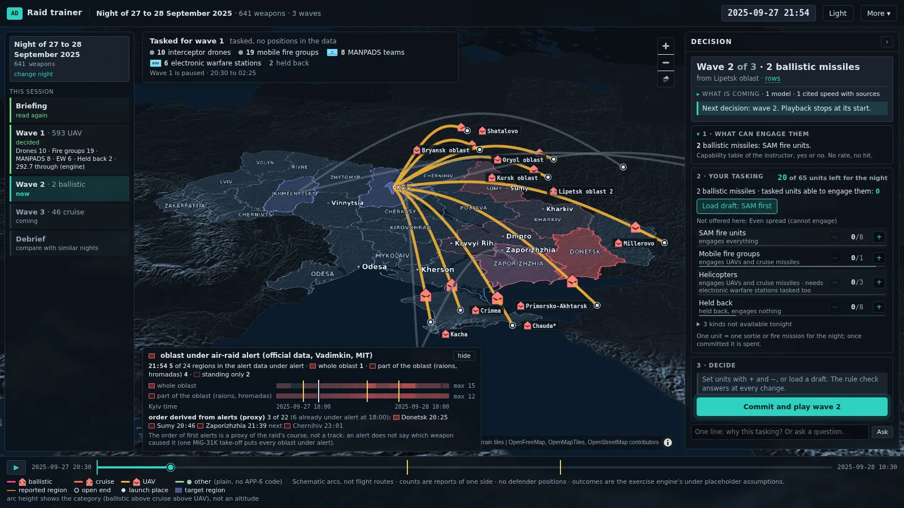
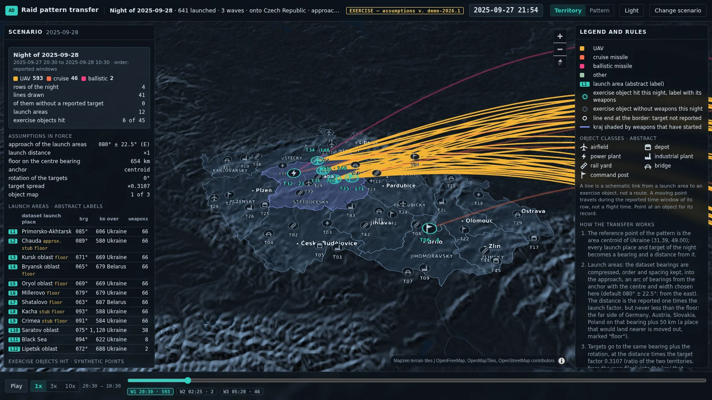

Defence technology · Prague
Command and control, decision support and simulation for defence
We build software for command and control (C2): decision support for commanders and staffs, modelling and simulation (M&S) for training and wargaming, and experimentation tooling that evaluates tactics against a traceable evidence trail.
What we do
C2 decision support
Course-of-action (COA) analysis and resource allocation for staff-level decisions under time pressure.
Modelling, simulation and wargaming
Constructive simulation with scenario generation grounded in historical engagements.
Experimentation and evaluation
Concept development and experimentation (CD&E) tooling.
Product
PRECEDENT
Precedent-driven Reasoning Engine for Combat Experimentation, Decision support and Evaluation of Novel Tactics
A reasoning engine that builds on precedent: it turns publicly reported drone and missile raids into exercises, supports course-of-action decisions and scores each of them. A language model proposes, code verifies, the human commits. First application: integrated air and missile defence (IAMD) and counter-UAS raid training, on premises with an open-weight language model.
- AI scenario generation
- Raid pattern transfer to a new territory
- AI-written MSEL
- AI critic of decisions
Combat experimentation
Scenario generation from publicly reported drone and missile raids and a knowledge base of observed tactics.
- Raid composition, waves, ingress corridors, weapon classes
- Raid patterns moved onto the trainee's own territory, with synthetic training objects
- Briefing and timed inject list (MSEL) for each exercise
Decision support
Layered air defence as a COA problem: task units across layers and corridors before each wave, commit, see the outcome.
- Language-model advisor drafts a plan; rules check it before it is shown
- Deterministic adjudication engine scores every plan against a rule-based baseline and an oracle
- The only recorded decision is the human commit
Evaluation of novel tactics
After-action review that names what was good, what was wrong and why.
- Critic challenges the plan before the commit
- Detection and false-alarm rates measured against seeded defects
- Every number shown traces to its source; a number without one is removed
Screens




Map data: Mapzen terrain tiles, OpenFreeMap, OpenMapTiles, OpenStreetMap contributors.
PRECEDENT is an exercise and experimentation tool. Scenario content consists of exercise assumptions derived from open sources and is labelled as such. It carries no operational or classified data and is not a targeting, fire-control or command system.
Interested in a demo or a pilot?
Get in touch